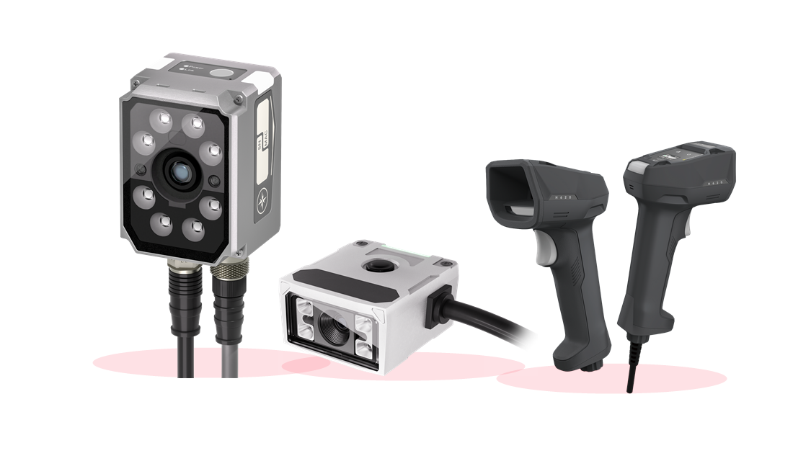

SJI
Application
Installation
Parameters
Recommendation
Zhuhai Sanjie Intelligent Technology Co., Ltd.
Guided Barcode Reader Selection
SJI helps overseas industrial buyers narrow down a suitable reader family from application, installation
method, and key code-reading parameters. Start with what you know; final purchase details can be confirmed
by SJI sales.
RS60 / RS200 / H620
398 public spec points
1-minute first recommendation

Public specs Loading
First recommendation Pending
Review status Ready
Step 1 / 4
Choose Your Application Scenario
Pick the closest workflow. This helps the selector favor the right reader family before detailed parameters.
01 Electronics / PCB PCB, labels, components, compact production stations.
02 Packaging / Food Cartons, printed codes, bottles, bags, and production lines.
03 Automotive Parts Traceability for metal, plastic, and assembled parts.
04 New Energy Battery, module, and material identification workflows.
05 Semiconductor Small code, high-precision, and inspection-related reading.
06 Warehouse / Inspection Manual scanning, warehouse operation, and flexible support.
Back
Next
Step 2 / 4
Select the Installation Method
Choose how the reader will be used. Fixed readers can be calculated from the public spec data; other workflows are guided to sales confirmation.
Fixed Machine-mounted reader Production line, equipment integration, traceability station.
Compact Limited-space reader Small machine, narrow position, embedded installation.
Handheld Manual scanning Warehouse, inspection, workstation, and flexible scanning.
Mobile PDA / software decoding Mobile data collection or software-based image decoding.
Back
Next
Step 3 / 4
Enter the Key Reading Conditions
Keep unknown fields blank. The selector can still prepare a recommendation and inquiry summary for SJI confirmation.
Back
Show Recommendation
Step 4 / 4
Ready for selection
Use this result as a first purchase direction. SJI will confirm the final model, lens, cable, light, and documents before quotation.
Waiting
Accessories to Confirm
Mounting bracket and installation space
Cable, connector, and communication interface
Light color and illumination configuration
Sample code images and application photos
Back
Start Again
 RS60 Series
RS60 Series RS200 Family
RS200 Family H620 Series
H620 Series